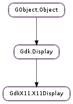

| error_trap_pop() | |
| error_trap_pop_ignored() | |
| error_trap_push() | |
| get_startup_notification_id() | |
| get_user_time() | |
| get_xdisplay() | |
| grab() | |
| set_cursor_theme(theme, size) | |
| set_startup_notification_id(startup_id) | |
| set_window_scale(scale) | |
| string_to_compound_text(str) | |
| text_property_to_text_list(encoding, format, text, length, list) | |
| ungrab() | |
| utf8_to_compound_text(str) |
None
None
Bases: Gdk.Display
| Returns: | X error code or 0 on success |
|---|---|
| Return type: | int |
Pops the error trap pushed by GdkX11.X11Display.error_trap_push (). Will XSync() if necessary and will always block until the error is known to have occurred or not occurred, so the error code can be returned.
If you don’t need to use the return value, GdkX11.X11Display.error_trap_pop_ignored () would be more efficient.
See Gdk.error_trap_pop () for the all-displays-at-once equivalent.
Pops the error trap pushed by GdkX11.X11Display.error_trap_push (). Does not block to see if an error occurred; merely records the range of requests to ignore errors for, and ignores those errors if they arrive asynchronously.
See Gdk.error_trap_pop_ignored () for the all-displays-at-once equivalent.
Begins a range of X requests on display for which X error events will be ignored. Unignored errors (when no trap is pushed) will abort the application. Use GdkX11.X11Display.error_trap_pop () or GdkX11.X11Display.error_trap_pop_ignored ()to lift a trap pushed with this function.
See also Gdk.error_trap_push () to push a trap on all displays.
| Returns: | the startup notification ID for display |
|---|---|
| Return type: | str |
Gets the startup notification ID for a display.
| Returns: | the timestamp of the last user interaction |
|---|---|
| Return type: | int |
Returns the timestamp of the last user interaction on display. The timestamp is taken from events caused by user interaction such as key presses or pointer movements. See GdkX11.X11Window.set_user_time ().
| Returns: | an X display |
|---|---|
| Return type: | xlib.Display |
Returns the X display of a Gdk.Display.
Call XGrabServer() on display. To ungrab the display again, use GdkX11.X11Display.ungrab ().
GdkX11.X11Display.grab ()/gdk_x11_display_ungrab() calls can be nested.
| Parameters: |
|---|
Sets the cursor theme from which the images for cursor should be taken.
If the windowing system supports it, existing cursors created with Gdk.Cursor.new (), Gdk.Cursor.new_for_display () and gdk_cursor_new_for_name() are updated to reflect the theme change. Custom cursors constructed with Gdk.Cursor.new_from_pixbuf () will have to be handled by the application (GTK+ applications can learn about cursor theme changes by listening for change notification for the corresponding #GtkSetting).
| Parameters: | startup_id (str) – the startup notification ID (must be valid utf8) |
|---|
Sets the startup notification ID for a display.
This is usually taken from the value of the DESKTOP_STARTUP_ID environment variable, but in some cases (such as the application not being launched using exec()) it can come from other sources.
If the ID contains the string “_TIME” then the portion following that string is taken to be the X11 timestamp of the event that triggered the application to be launched and the GDK current event time is set accordingly.
The startup ID is also what is used to signal that the startup is complete (for example, when opening a window or when calling Gdk.notify_startup_complete ()).
| Parameters: | scale (int) – The new scale value |
|---|
Forces a specific window scale for all windows on this display, instead of using the default or user configured scale. This is can be used to disable scaling support by setting scale to 1, or to programmatically set the window scale.
Once the scale is set by this call it will not change in response to later user configuration changes.
| Parameters: | str (str) – a nul-terminated string |
|---|---|
| Returns: | 0 upon success, non-zero upon failure |
| Return type: | int, encoding: Gdk.Atom, format: int, ctext: [int] |
Convert a string from the encoding of the current locale into a form suitable for storing in a window property.
| Parameters: |
|
|---|---|
| Returns: | the number of strings stored in list, or 0, if the conversion failed |
| Return type: |
Convert a text string from the encoding as it is stored in a property into an array of strings in the encoding of the current locale. (The elements of the array represent the nul-separated elements of the original text string.)
Ungrab display after it has been grabbed with GdkX11.X11Display.grab ().